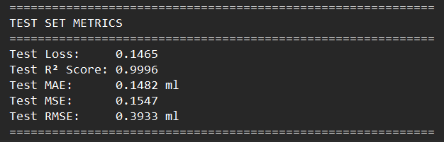
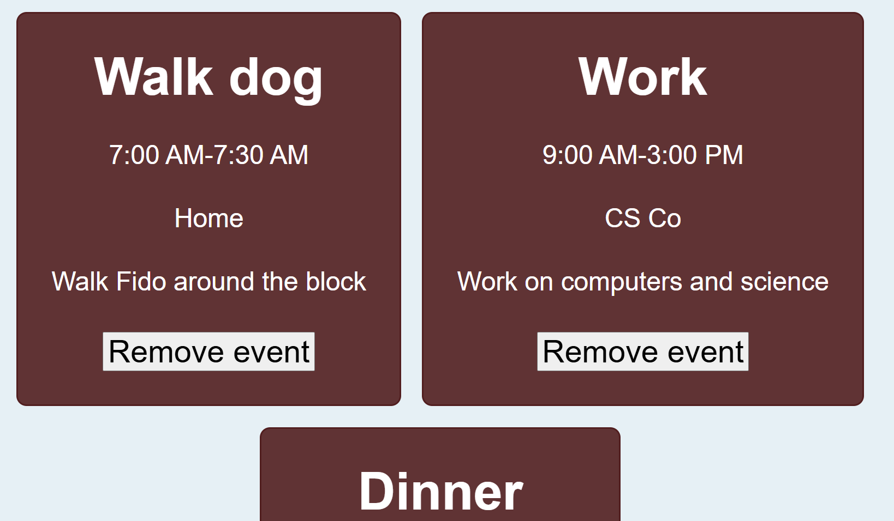
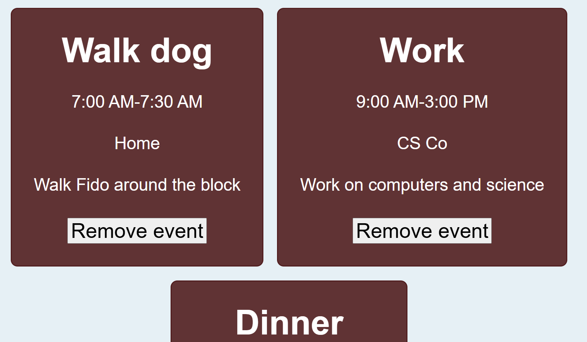

I am currently working with HeraHealth, a women's health technology startup to develop an AI-powered Postpartum Hemorrhage Tracking App.
My main role on the team is to train, optimize, and implement a computer vision model capable of tracking blood loss in new mothers via pictures of their pads. However, as with many startups, I am wearing many hats.
This has given me the unique and exciting opportunity to see all sides of a application's development, including frontend and backend development, community outreach and user testing, and the legal hurdles of developing a health application.
For new mothers, the leading cause of death is postpartum hemorrhaging, which is a risk that can last up to 12 weeks after birth. With the HeraHealth app, these mothers would be able to automatically track and detect this hemorrhaging before it becomes life threatening.
Being able to use AI to tackle a dangerous problem that affects some of our most vulnerable people was a very inspiring oppurtunity for me.
Training the computer vision model was a powerful learning experience for me. I was lucky to have a team with absolute pros who were kind enough to guide me through the process, explain the logic behind the training, and point me to great resources for self study
Due to the medical nature of the project, finding data for our training was difficult. We had a single dataset that showed pads labelled with the amount of blood on them, but it could only do so much to improve model accuracy. We ended up using data augmentation methods to extend the dataset and make the model more robust with different image qualities, angles, and lighting.
Our model was tested, showed extremely high accuracy, even with image conditions it had not been previusly exposed to, and is now ready to be implemented into the application.

With the AI model done, I have shifted my attention to 3 other aspects of the project: the app, the users, and the law.
We are currently creating a React-powered app to allow for easy cross-platform publishing. While our main goal is to develop mobile applications, we are also keeping the app easily modifiable and scalable to allow for future work such as a website.
I am also spending time reaching out to mothers and healthcare professionals to interview them. Through these interviews, I can help inform design decisions, better understand my target demographic, and foster a connection with our potential userbase.
Working on an app designed for medical use has also required me and my team to be very conscientious about HIPPA compliance and general user privacy. Adhering closely to cybersecurity principles and methodologies had been a direct way of addressing these concerns. However, we have also reached out to health law experts throughout our development cycle to ensure compliance and make our application properly secure.
Our timeline is to finish the app by the end of December, then perform user testing and quality assurance in the Spring as we prepare for a full release at the summer's start.
This entire development process has been an amazing learning experience for me, and I am grateful to be able to work on such an impactful issue with such a talented team.
My experience with working on a production-level project is teaching me a web of skills that I will carry with me into my future projects


 
